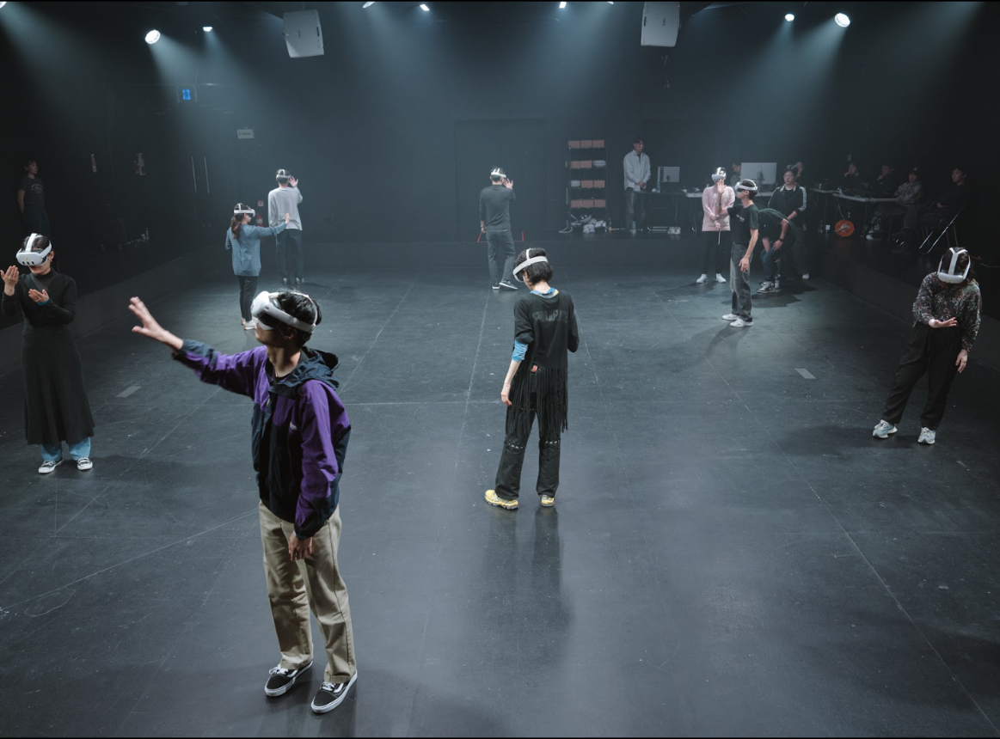
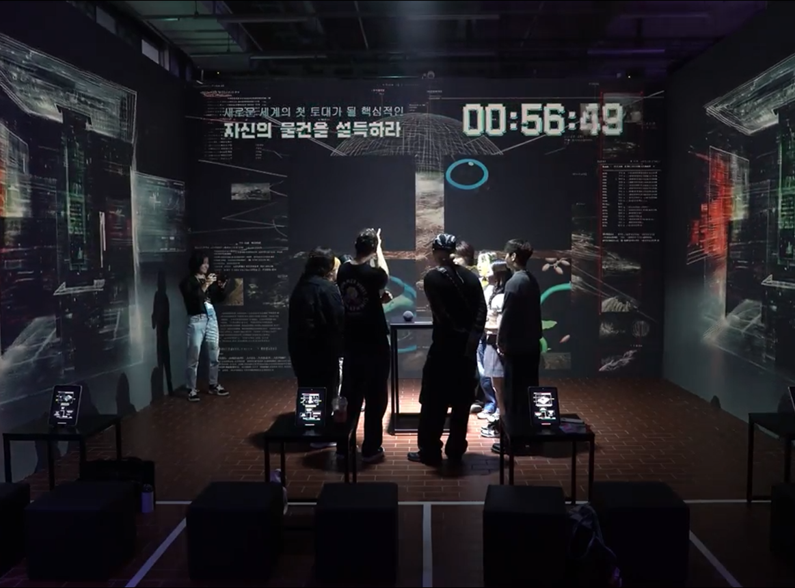
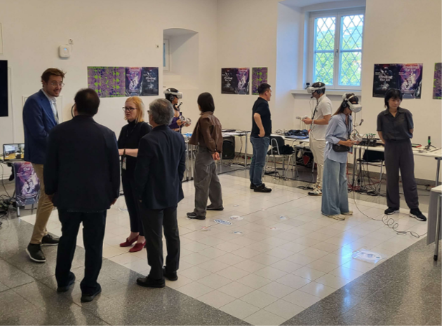
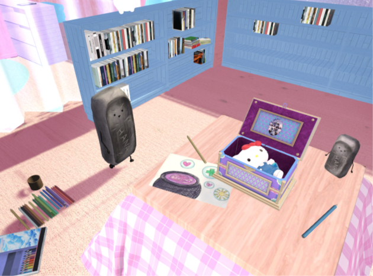
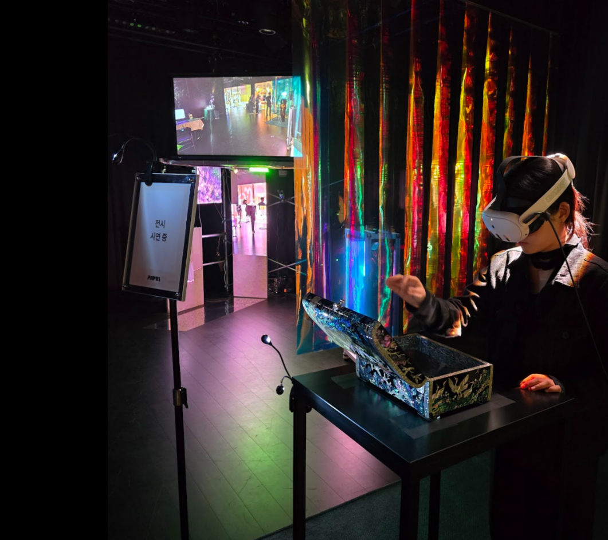
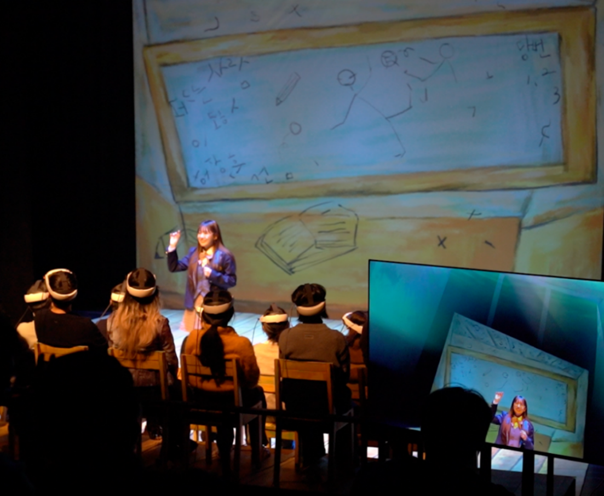

PAPRI STUDIO · XR · AI · 이머시브 다원예술
Lee Kwang-hyun · 파프리 스튜디오
물리적 현실과 가상 현실 사이, 시간과 공간이 접히고 풀리는 자리를 다룬다. 내가 붙잡는 것은 기술이 아니라 그 기술로 관객과 맺는 관계다. 관객이 어디에 서고 무엇이 되어 보는가, 거기서 작업이 시작된다.
XR이 하는 일 · 01
화면은 프레임이다. 원근법은 600년 동안 세계를 창틀 안에 가두고 그 앞에 한 사람을 세웠다. 그 사람은 보는 주체가 되고 나머지는 보이는 대상이 된다.
XR은 더 좋은 화면이 아니라 화면을 없앤 매체다. 프레임이 사라지면 바깥이라는 것도 사라지고, 관객은 들여다보는 눈이 아니라 장면 안에 선 몸이 된다. 카메라를 관객에게 넘기는 일이기도 하다.
XR이 하는 일 · 02
현실은 여러 겹으로 나뉘어 있다. 무대와 객석, 화면과 그 앞에 앉은 사람. 우리는 대개 한 층에 머문 채 다른 층을 바라본다.
XR은 그 층을 통과하게 한다. 관객은 한 자리에 고정되지 않고 장면의 안과 밖을 오간다. 정해진 자리에서 벗어나 보면 같은 장면도 전혀 다르게 만져진다.
XR이 하는 일 · 03
한 공간에 다른 시간을 겹칠 수 있다. 움직임을 기록해 두면 과거의 나와 지금의 내가 같은 자리에 나란히 선다. 여기와 저기도 포갤 수 있다.
〈문문문〉에서 열두 명의 관객은 같은 달을 본다. 그런데 선 자리가 달라서 모두 다른 달을 본다. 중심에 선 한 사람은 없다. 각자가 자기 자리의 달을 가진다.
XR이 하는 일 · 04
XR은 다른 사람의 몸으로 걸어 들어가게 한다. 낯선 이주민의 눈으로 거리를 걷고, 내가 아닌 존재의 자리에서 같은 세계를 본다.
보는 것과 그 몸이 되어 보는 것은 다르다. 멀리서 이해한다고 말하던 일을 잠시 그 몸을 입고 겪게 된다. 관객은 그렇게 서로를 안에서 체험한다.
XR이 하는 일 · 05
연극은 오래전부터 가면을 썼다. 가면은 얼굴을 가리는 동시에 다른 존재가 되게 한다. 페르소나 뒤에서 배우는 평소의 자신을 잠시 내려놓는다.
XR의 아바타도 가면이다. 다른 몸과 다른 얼굴을 입으면 관객은 안 해본 말을 하고 안 해본 몸짓을 한다. 가면을 쓰면 숨는 동시에 풀려난다. 평소엔 못 하던 것이 그제야 나온다.
작업의 방법 · 다섯 가지
전시에서 산책으로
SELECTED WORKS






CV
프레임이 사라지면 관객은 더 이상 바깥에서 보지 않는다.
전시장에서든 골목에서든, 그 사람이 직접 걷고 선택할 때 작품이 완성된다. 나는 늘 그 자리를 만들어 왔다.